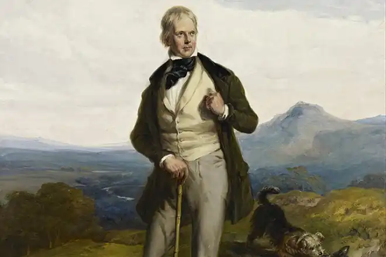

ВАЛЬТЕР СКОТТ
(1771 — 1832)
Вальтер Скотт народився 15 серпня 1771 року в столиці Шотландії Единбурзі, в родині шотландського баронета, заможного юриста. Був дев'ятою дитиною в родині, у якій було дванадцятеро дітей. У січні 1772 року Скотт захворів на дитячий параліч, втратив рухливість правої ноги і назавжди залишившись кульгавим. Двічі (в 1775 і в 1777 роках) маленький Скотт перебував на лікуванні в курортних містечках Бат і Престонпанс. У 1778 році Скотт повертається до Единбурга. З 1779 року він навчається в единбурзькій школі, у 1785 році вступає до единбурзького коледжу. Важливим для Скотта стає 1792 рік: в Единбурзькому університеті він витримав іспит на звання адвоката. З цього часу Вальтер Скотт стає поважною людиною з престижною професією, має власну юридичну практику. Двадцять четвертого грудня 1796 року Скотт одружується з Маргарет Карпентер, у 1801 році у нього народжується син, а в 1803 році — дочка. З 1799 року він стає шерифом графства Селкерк, з 1806 року — секретарем суду. Перші літературні виступи В. Скотта припадають на кінець 90-х років: у 1796 році виходять переклади двох балад німецького поета Г. Бюргера "Ленора" та "Дикий мисливець", а в 1799 році — переклад драми І. В. Гете "Гец фон Берліхінгем". Першим оригінальним твором молодого поета стала романтична балада "Іванів вечір" (1800). Саме з цього року Скотт починає активно збирати шотландський фольклор і, як результат, у 1802 році видає двотомну збірку "Пісні шотландської межі". До збірки увійшло кілька оригінальних балад та безліч опрацьованих південно-шотландських легенд. Третій том збірки вийшов у 1803 році. Вальтер Скотт, при слабкому здоров'ї, мав феноменальну працездатність: як правило, він публікував не менше двох романів на рік. Протягом понад тридцятирічної літературної діяльності письменник створив двадцять вісім романів, дев'ять поем, безліч повістей, літературно-критичних статей, історичних праць. Романтичні поеми 1805-1817 років принесли йому славу видатного поета, зробили популярним жанр ліро-епічної поеми, що поєднує драматичну фабулу середньовіччя з мальовничими пейзажами та ліричними піснями у стилі балад: "Пісня останнього менестреля" (1805), "Марміон" (1808), "Діва озера" (1810), "Рокбі" (1813) та ін. Скотт став засновником жанру історичної поеми. У сорок два роки письменник вперше подав на суд читачів свої історичні романи. Як і його попередники на цьому терені, Скотт називав численних авторів "готичних" й "антикварних" романів, особливо його захоплювала діяльність Мері Еджуорт, у творчості якої відображена ірландська історія. Але Скотт шукав свій власний шлях. "Готичні романи" не задовольняли його надмірним містицизмом, "антикварні" — незрозумілістю для сучасного читача. Після довгих пошуків Скотт створив універсальну структуру історичного роману, провівши перерозподіл реального й вигаданого так, щоб показати, що не життя історичних осіб, а постійний рух історії, який не може зупинити жодна з видатних особистостей, є справжнім об'єктом, вартим уваги художника. Погляд Скотта на розвиток людського суспільства називають провіденціалістським (від лат. Providence — Божа воля). Тут Скотт іде слідом за Шекспіром. Історичні хроніки Шекспіра осягали національну історію, але на рівні "історії королів". Скотт перевів історичних особистостей у площину тла, а на авансцену подій вивів вигаданих персонажів, на долю яких впливає зміна епох. Таким чином, Скотт показав, що рушійною силою історії виступає народ, саме народне життя є основним об'єктом художнього дослідження Скотта. Його давнина ніколи не буває розмитою, туманною, фантастичною; Скотт є абсолютно точним у зображенні історичних реалій, тому вважається, що він розробив явище Історичного колориту, тобто майстерно показав своєрідність певної епохи. Попередники Скотта зображували історію заради історії, демонстрували свої видатні знання і таким чином збагачували знання читачів, але заради самих знань. У Скотта не так: він знає історичну епоху детально, але завжди пов'язує її з сучасними проблемами, показуючи, як подібні проблеми знаходили своє вирішення в минулому. Отже, Скотт —— творець жанру історичного роману; перший із них — "Уеверлі" (1814) — з'явився анонімно (наступні романи аж до 1827 року виходили як твори "автора "Уеверлі""). У центрі романів Скотта лежать події, що пов'язані зі значними соціально-історичними конфліктами. Серед них — "шотландські" романи Скотта (що написані на основі шотландської історії) — "Гай Маннерінг" (1815), "Антикварій" (1816), "Пуритани" (1816), "Роб Рой" (1818), "Легенда про Монтроза" (1819). Найбільш вдалими з-поміж них є "Пуритани" і "Роб Рой". У першому зображено повстання 1679 року, що було спрямоване проти реставрованої 1660 року династії Стюартів; герой "Роб Роя" — народний месник, "шотландський Робін Гуд". У 1818 році з'являється том Британської енциклопедії зі статтею Скотта "Лицарство". Після 1819 року посилюються протиріччя у світогляді письменника. Ставити гостро, як раніше, питання класової боротьби Скотт більше не наважується. Проте тематика його історичних романів стала помітно ширшою. Виходячи за межі Шотландії, письменник звертається до давніх часів історії Англії і Франції. Події англійської історії зображено в романах "Айвенго" (1820), "Монастир" (1820), "Абат" (1820), "Кенілворт" (1821), "Вудсток" (1826), "Пертська красуня" (1828). Роман "Квентін Дорвард" (1823) присвячений подіям у Франції часів правління Людовіка XI. Місцем дії роману "Талісман" (1825) стає східне Середземномор'я. Якщо узагальнити події романів Скотта, то ми побачимо особливий, своєрідний світ подій і почуттів, гігантську панораму життя Англії, Шотландії і Франції протягом кількох століть, з кінця XI до початку XIX століття. У творчості Скотта 20-х років, при збереженні реалістичної основи, часом збільшується присутність і суттєвий вплив романтизму (особливо в "Айвенго" — романі з епохи пізнього середньовіччя). Особливе місце в ній посідає роман із сучасного життя "Сент-Ронанські води" (1824). У критичних тонах показано обуржуазнення дворянства, сатирично змальовується титулована знать. У 20-х роках було опубліковано низку творів Вальтера Скотта на історичні та історико-літературні теми: "Життя Наполеона Бонапарта" (1827), "Історія Шотландії" (1829 — 1830), "Смерть лорда Байрона" (1824). Книга "Життєописи романістів" (1821 — 1824) дає змогу уточнити творчі зв'язки Скотта з письменникам XVIII століття, особливо з Г. Філдінгом, якого він називав "батьком англійського роману". Зазнавши наприкінці 20-х років фінансового краху, Скотт за кілька років заробив стільки, що майже повністю розрахувався з боргами, які перевищували сто двадцять тисяч фунтів стерлінгів. У житті він був зразковим сім'янином, людиною доброю, чутливою, тактичною, вдячливою; любив свій маєток Ебботсфорд,— який перебудував, зробивши з нього невеличкий замок; дуже любив дерева, свійських тварин, хороше застілля в сімейному колі. У 1830-1831 Скотт зазнає три апоплексичні удари. Помер він від інфаркту 21 вересня 1832 року. Створивши історичний роман, Скотт встановив закони нового жанру й блискуче втілив їх на практиці. Навіть сімейно-побутові конфлікти він пов'язав з долями нації й держави, із розвитком суспільного життя. Творчість Скотта суттєво вплинула на європейську та американську літератури. Саме Скотт збагатив соціальний роман XIX століття принципом історичного підходу до подій. У багатьох європейських країнах його твори лягли в основу національного історичного роману. "Айвенго" (1820) Роман "Айвенго" — чи не найпопулярніший з усіх романів Вальтера Скотта. У творі зображено кінець довготривалої боротьби між саксами та норманами, яскраво змальовано бурхливу картину минулого Англії за перших часів феодалізму. В основу роману покладено традиційне для В. Скотта переплетіння любовної та політичної інтриг. У центрі розповіді перебуває закохана пара — лицар Айвенго та леді Ровена, доля і благополуччя яких повністю залежать від розвитку історичних подій. Конфлікт розгортається між двома ворогуючими таборами: норманами, які завоювали Англію в кінці XI століття, та англосаксами, які володіли нею вже впродовж кількох століть, витіснивши, у свою чергу, племена бриттів. Герой діє на тлі мальовничих історичних подій, він відданий кодексу честі, у будь-якій ситуації поводиться відповідно до почуття обов'язку й зберігає вірність прекрасній коханій. Айвенго — справжній лицар, оскільки здійснює всі вчинки, що відповідають лицарському кодексу честі. Під маскою паломника-пілігрима — він єдиний, хто зглянувся на слабкого старця — лихваря Ісаака, поступився йому місцем біля вогнища. Анонімно він викликає на бій лицаря Храму нездоланного Буагільбера; заступаєтся за честь сина Седріка (тобто за свою власну, але ж знову анонімно); рятує Ісаака від пограбування та смерті; перемагає в кількох поєдинках лицарів-тамплієрів; змагається разом із Річардом Левове Серце; бере участь у хрестовому поході; рятує красуню Ревекку, протягом усього роману не зраджуючи лицарським поняттям честі. Побудований на захоплюючому відгадуванні загадок, що послідовно виникають (таємниця сина Седріка Сакса, таємниця пілігрима, таємниця Лицаря, Позбавленого Спадку, таємниця Чорного Лицаря), роман поєднує в собі інтригу, мальовниче видовище й філософське осмислення подій. Крім Айвенго, в романі присутній ще один справжній лицар. Звичайно ж, це Річард Левове Серце. Річарда з роману понад усе цікавить життя простого мандрівного лицаря, для нього найдорожче — слава, яку він здобуває самостійно своєю твердою рукою й мечем, ніж перемога, здобута на чолі стотисячного війська. Це про нього Ревекка, яка спостерігала з башти за поєдинком, каже: "Він йде на битву, мов на веселий бенкет. Не тільки сила м'язів керує його ударами — здається, ніби він усю свою душу вкладає в кожен удар, що наносить ворогу. Це страшне і величне видовище, коли рука й серце однієї людини перемагає сотні людей". Важливо вказали на відмінності між історичним прототипом і його літературним двійником. Справжній лицар Айвенго, якого не існувало в дійсності, та справжній лицар Річард Левове Серце, чий історичний образ, м'яко кажучи, не зовсім відповідає романтичному образу необхідні Вальтеру Скотту для втілення в романі власних ідей, причому він прекрасно усвідомлює те, що реальний Річард І не був романтичним лицарем без страху й догани. Особливу увагу в романі привертають жіночі образи.